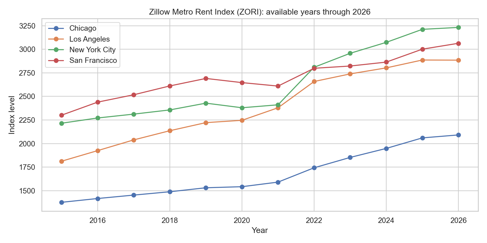
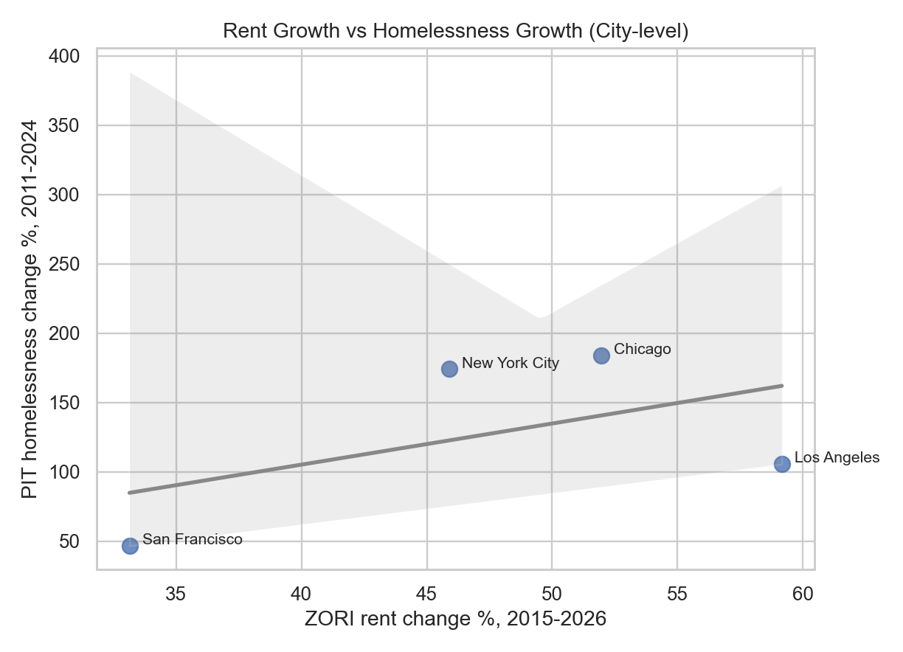
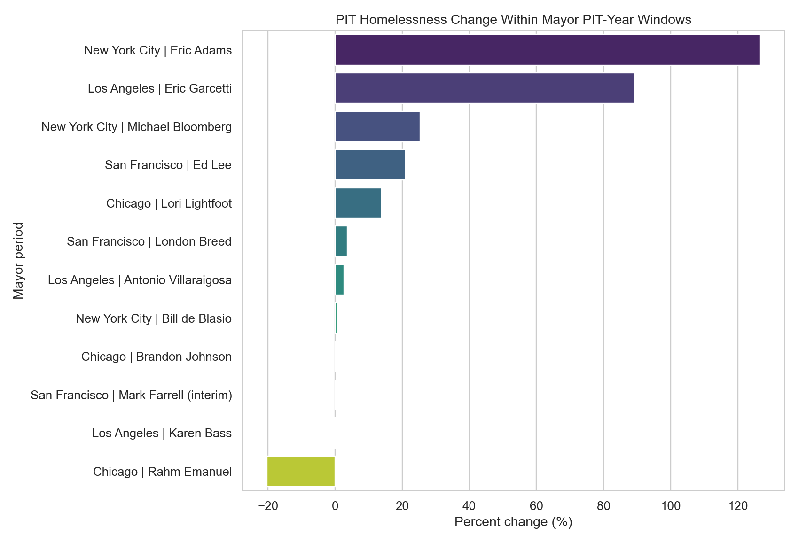

Homelessness and Housing: 4-City Deep Dive
SF | NYC | Chicago | Los Angeles
TL;DR
- All four cities increased in PIT counts (2011->2024).
- NYC and Chicago recent jumps are mainly sheltered growth.
- Los Angeles growth includes both sheltered and unsheltered gains.
- Rent pressure rose everywhere.
Data and Method
- HUD PIT, Zillow ZORI, NYC daily shelter census.
- Trend analysis, mayor periods, decomposition by shelter status.
Long-run PIT trend

City growth ranking

Unsheltered share dynamics

2022->2024 decomposition

Housing pressure


Mayor-period outcomes

Interpretation
- Shelter-system and inflow dynamics are central in NYC and Chicago.
- LA remains structurally high with persistent unsheltered burden.
- SF shows lower relative growth and declining unsheltered share post-2019.